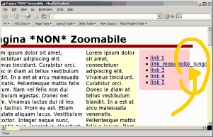
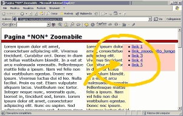
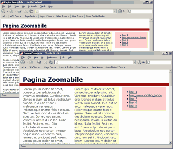
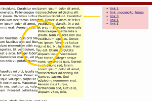

Pagine zoomabili
In questo articolo vedremo come realizzare un semplice layout in grado di assecondare il ridimensionamento dei caratteri. L’effetto è simile a quello di una pagina che può essere ingrandita con una sorta di lente di ingrandimento.
Il problema
Una delle funzioni più utili del browser, in termini di accessibilità, è la possibilità di ingrandire o ridurre le dimensioni del testo (N.B.:Internet Explorer per Windows ancora oggi non varia la dimensione dei caratteri se esperessa in pixel).
Ingrandendo il testo può però accadere che parole piuttosto lunghe non riescano più ad essere contenute nello spazio loro assegnato (vedi figura 1).

[Fig.1 — Screenshot con Mozilla/Firebird] Il testo ingrandito esce fuori dai bordi.
Con Internet Explorer l’effetto è leggermente differente, poiché il box si espande ma il layout può risultare confuso dato che gli altri box, non essendo dotati di funzioni specifiche, non si adattano al cambiamento. Un esempio è illustrato in figura 2.

[Fig.2 — Screenshot con IE6] A causa del testo ingrandito (molto grande), il box contenitore si espande e si sovrappone al box alla sua destra.
La soluzione
Per risolvere il problema è sufficiente utilizzare unità di misura variabili con la dimensione del testo, ovverosia gli em (maggiori dettagli sull’unità em sono disponibili nell’articolo Dimensionare i caratteri con i CSS). L’unità em è pari alla dimensione dei caratteri, dunque la sua lunghezza varia al variare della dimensione dei caratteri, così da poter realizzare layout “elastici”.
Nella pagina di esempio è presentato un layout a tre colonne in cui la larghezza e il posizionamento delle colonne secondarie è stabilito in em.
Dettagli sulla realizzazione di un layout a tre colonne col posizionamento assoluto sono disponibili nell’articolo “Layout a tre colonne per tutti i gusti” dove i layout sono realizzati utilizzando i pixel.
La pagina di pagina di esempio è così strutturata:
- Intesazione
-
Corpo:
- principale
- secondario
- menu
- Note
Nella pagina di esempio le due colonne laterali sono larghe 15 em e distanziate fra loro di 1 em, la colonna del menu è posta alla distanza di 1 em dal bordo destro della finestra del browser:
#secondario {
position : absolute;
top : 0;
right : 17em;
width : 15em
}
#menu {
position : absolute;
top : 0;
right : 1em;
width : 15em;
}
In questo modo, all’aumentare della dimensione dei caratteri, aumenterà anche la dimensione delle colonne laterali.
La colonna principale ha il margine destro pari a 33 em, in modo da lasciare spazio alle colonne secondarie posizionate in modo assoluto:
#principale {
margin : 0.5em 33em 0.5em 1em;
}
La colonna principale, per lasciare spazio alle colonne secondarie, si restringerà all’aumentare della dimensione dei caratteri.
L’effetto finale, dunque è quello di avere un layout le cui colonne secondarie (più strette) si allargano per ospitare testo di dimensioni maggiori e la cui colonna principale, più larga, si restringe per adattarsi alla nuova impaginazione, evitando che il layout si allarghi oltre la dimensione della finestra del browser (vedi figura 3).

[Fig.3 — Screenshot con Mozilla/Firebird] Ingrandendo il carattere il layout si adatta di conseguenza.
L’effetto “lente di ingrandimento”
Oltre che per l’impaginazione delle diverse aree, le unità em possono essere adottate per altri elementi del layout come ad esempio lo spessore dei bordi. Ad esempio nella pagina di esempio il bordo che separa l’intesatazione dalle colonne sottostanti aumenta all’aumentare della dimensione dei caratteri. Utilizzando intensivamente le unità em per gli altri aspetti del layout, agendo sulla dimensione dei caratteri si otterrà un effetto simile all’uso di una lente di ingrandimento (vedi pagina di esempio).
Lo strano comportamento di IE5.2 per Mac
Col browser IE5.2 per Mac, però, si presenta un problema: la colonna dei contenuti secondari non si posiziona correttamente, come se il valore specificato per la proprietà right fosse maggiore del previsto. Un esempio è mostrato in figura 5.

[Fig.4 — Screenshot con IE5.2 Mac] La colonna dei contenuti secondari è spostata verso sinistra.
In pratica, è come se l’unità em fosse maggiore del dovuto.
La soluzione al problema, fortunatamente, è estremamente semplice: basta aggiungere la dichiarazione font-size : 1em alla regola CSS per la colonna dei contenuti secondari:
#secondario {
position : absolute;
top : 0;
right : 17em;
width : 15em;
font-size : 1em;
}
File correlati
Articoli correlati:
Strumenti


.ConStile è disponibile anche in XML.
Some Rights Reserved. This work is licensed under a Creative Commons License.